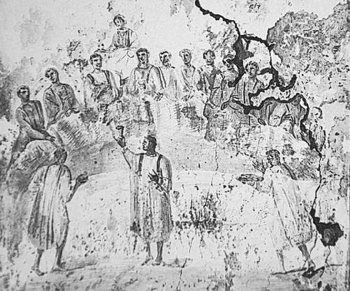
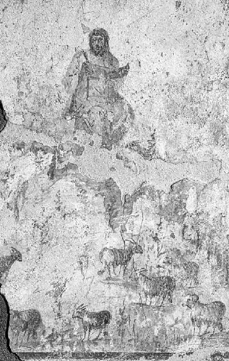
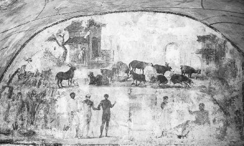
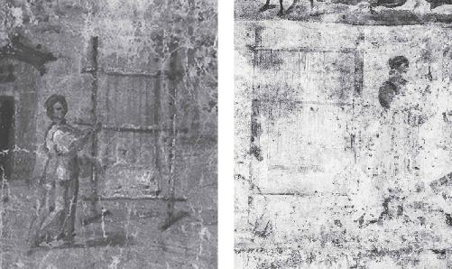
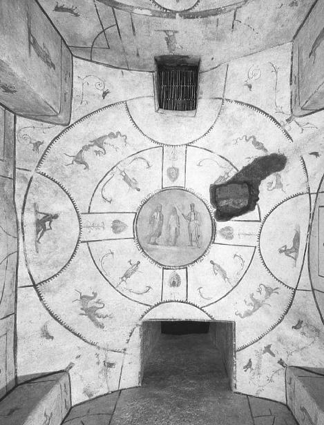
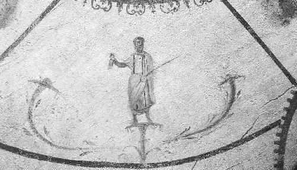
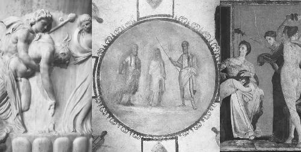

13
The Holy Grail
“Do you detect a banquet scene here?” I prompt our Vatican guide, Giovanna.
We’re now in the first of the two subterranean chambers proper. It’s more spacious and far less claustrophobic than I expected. When we’re not scrunching our feet against the dirt and pebble floor, there is an almost jarring absence of noise. Although we’re many feet under the streets of Rome, this musty hole in the earth has a strangely inviting feel about it. A nice spot for a mind-bending “chill-out” with the dead. Just like the one rendered on the fresco high on the wall in front of me.
“Yes. This is the stibadium, the round couch at the table,” answers Giovanna. “These are the men seated around it. The servants with glasses and vessels in the foreground. And a young woman in the background. These scenes are very common in the third century in the Roman tradition. And they consider her Aurelia Prima,” the Vatican archaeologist motions to the female figure at the top of the painting, “just arriving for the heavenly banquet.”
The color and nuance of the many figures around the table are crisp and well preserved. I can easily make out the three servants, barefoot in white tunics, approaching the dinner with refreshments in hand. The one in the middle has just raised a chalice in his right hand. It’s hard to tell what they’re staring at, but all the guests seem to be transfixed by the strange maneuver.

The funerary banquet fresco in the first, underground chamber of the Hypogeum of the Aurelii. This sacred meal for the dead could alternatively be interpreted as a Roman refrigerium or a Christian Eucharist. Or perhaps both. (© Pontificia Commissione di Archeologia Sacra; courtesy of Archivio PCAS)
“It’s being held up ceremoniously,” I suggest, referring to the golden chalice. “I mean, it doesn’t look like a functional pose. That’s not how you serve wine, right?”
“Right,” Father Francis agrees. “He’s presenting it with his fingers sticking out, and the other hand has the fingers extended as well. I think that’s intentionally some kind of ritual gesture.”
“Would it be a stretch to call it a ‘consecration’?” I ask, referring to the magical procedure by which the Catholic priest is able to transform ordinary bread and wine into the body and blood of Jesus. There’s a moment in today’s Mass when Father Francis holds the Eucharistic cup aloft, just like this servant, as soon as the wine has transubstantiated into the life-giving blood. It’s called the “elevation” of the Most Blessed Sacrament.1
“I think it’s a ‘designation,’” my friend responds, mincing words. “He’s saying ‘this is something.’”
“Sure, but that’s still a ritual act. Just like in the Gospels with touto estin.” I throw out the Greek phrase for “this is” (τοῦτό ἐστιν). In Matthew, Mark, Luke, and Paul, Jesus uses the same formula when consecrating the Eucharist for the very first time at the Last Supper: “This is (touto estin) my body.… This is (touto estin) my blood.”2 The fundamental meaning of that language and this arm raising, ancient and modern, is all the same: this ain’t grape juice. The god is present in this liquid. And once you drink it, the god will be present inside you. So proceed cautiously.
“Yes, you’re right,” concedes Father Francis, sensing my reading of the fresco. “So then, how many people do we have here?” The priest begins counting the guests arranged in a semicircle around the table, laughing out loud when he gets to the final number. “Well, looks like we have twelve people all right.”
Like an archaic model for da Vinci’s masterpiece in Milan, the fresco conjures the sanctity of the Last Supper. Perhaps the oldest surviving example ever painted by Christian hands. But not everybody sees it this way.
“Does the Vatican have an opinion here, Giovanna?” I inquire.
“A funerary banquet scene. Just the family feasting for the deceased. With the deceased probably,” she corrects herself. Given some of the more overt pagan motifs we’re about to examine in the neighboring frescoes, the Church is hesitant to call this meal a Eucharist. But we’ve just spent the past half hour analyzing some of the better Christian symbols in the chamber. Behind us on the opposite wall was the bucolic landscape of a herdsman and goats, possibly John’s depiction of Jesus as the “Good Shepherd.” Why he’s tending goats instead of lambs is not entirely clear. Whoever he is, he’s definitely rocking the long-haired Jesus look. In addition, we saw the portrait of a bearded man, whom Father Francis and others have suggested is Saint Paul. And we also examined a rose-studded path leading to the gates of a vast cityscape, perhaps Jesus’s entrance into Jerusalem on Palm Sunday.
“I don’t think a Christian interpretation is that crazy,” I disagree after a slight pause. Whenever twelve people belly up to a sacred dinner, and start drinking sacramental wine in a tomb under the Vatican’s exclusive authority, what else are we supposed to think?
“But in this case, I wouldn’t say it’s the Last Supper,” interjects Father Francis. He doesn’t see Jesus and the Apostles, but he does see their legacy. “Whatever group this is,” he continues, “it must be celebrating a similar banquet. A ritual banquet with the Holy Grail.” The priest draws my attention back to the shiny chalice he envisions holding the blood of Jesus.
Giovanna is not convinced that the Roman refrigerium and Christian Eucharist were so easily interchangeable. If it’s really a primordial Mass, then why is a dead woman walking around? She repeats her observation about Aurelia Prima descending on the banquet from the background, and notes how the twelve men seated around the table could be her living relatives. I look back at the delicate figure of a woman, her dress painted in red and black outline that disappears into the off-white of the plaster. She is the thirteenth member of the feast, and the only female.

The Good Shepherd fresco in the first, underground chamber of the Hypogeum of the Aurelii. In John 10:11, Jesus refers to himself as the Good Shepherd who “lays down his life for the sheep.” But the presence of goats here removes this imagery from the Gospels. If this scene was really meant to portray Jesus, it instantly connects him to the goats of Dionysus. (© Pontificia Commissione di Archeologia Sacra; courtesy of Archivio)

Fresco portrait of an unknown, bearded man in the first, underground chamber of the Hypogeum of the Aurelii. While Saint Paul is a possibility, images like this are reminiscent of the pagan philosopher, Plotinus, from the third century AD. Such portraits inspired later iconography around Saint Paul. (© Pontificia Commissione di Archeologia Sacra; courtesy of Archivio PCAS)
“Because you’re interpreting it as some kind of refrigerium?” asks Father Francis.
“Yes,” Giovanna answers.
“Why a refrigerium?” I question, trying to figure out what distinguishes this scene from a Eucharist.
“Because it’s the Roman ritual during the funeral. They brought food to the tombs. They gave a banquet for the parentalia,” she adds, referring to the nine-day celebration of the ancestors in Rome, during which the drunken night of the living dead would have been especially promoted. “For as long as the celebrants’ mood and their wine might last,” according to Ramsay MacMullen at Yale.
“A supernatural meal,” I add. We’re all getting lost in semantics and drawing boundaries where few existed in the third century: between Greek and Roman, Christian and pagan, sacred and profane. The foremost authority on this lost tradition, the secular scholar MacMullen, has no problem confirming the pagan continuity between the refrigerium and the Eucharist. He notes these family gatherings in a Christian context “are not imaginary,” citing the “tangible testimonies” of excavations at the Papal Basilica of San Lorenzo, built to honor one of the first seven deacons of Rome who was martyred in AD 258. Several mausolea were unearthed with “bits of cooking and eating vessels,” objects that MacMullen attributes to the service of “Christian refrigeria.” All as further evidenced by inscriptions left throughout this ancient city, which record “ancestor worship” in the form of promises or debts to the Christian deceased: “Dalmatius promised a communion picnic, a refrigerium, as a vow”; “Tomius Coelius held a communion picnic for Peter and Paul.”3
Establishing a channel of communication with the Other Side was mutually beneficial. On the one hand, the dead would receive the nourishment they needed while awaiting the Last Judgment; they would not go missing in limbo. On the other, the living got a little closer to their Creator, “since the martyred heroes of the congregation were believed to have special influence as petitioners at the throne of God.”4
At St. Peter’s Basilica, just a fifteen-minute drive to our west, the situation was identical. Underneath the largest Christian cathedral in the world, the seat of the papacy and the nerve center for Catholics the world over, a second-century shrine known as an aedicula was found, dedicated to Saint Peter himself. Around it, embedded in the earth, were heaps of bones from domestic animals. A neighboring sarcophagus was equipped with a libation tube for supplying wine to the deceased. MacMullen confirms, “The bones can only have been left from religious picnics; the tube obviously served the purposes of memorial communion.”5 The “basilica built among the dead” continued to host “chill-outs” for years after Constantine’s initial construction in the fourth century, where “wine in worship flowed freely and not only on the saint’s festival.”6 And why not? With “hundreds of burials beneath the floor,” says MacMullen, “some family was bound to turn up for remembrance’s sake on each and every day of the year.”7 It should come as no surprise that the Eucharist itself would be celebrated at St. Peter’s as part of the “communion parties.” One shocked cleric at the time remarked, “Their [martyrs’] tombs are seen as Christ’s altars.”8 Imagine the intoxicated, all-night affair, promising an in-person appearance by your dead relatives, the holy saints, and possibly the Lord himself—all made possible by the Eucharistic funerary meal that laid the very foundations for the Catholic Mass.
For the purely pagan rituals that preceded Christianity, it was all about ancestor worship as well. The Romans designated their dead relatives as “gods” (dii or divi in Latin, sometimes adding immortales), much the way a Greek speaker might call them “gods” or theoi (θεοί).9 The deceased were no longer limited by the physical body. They had access to cosmic information beyond time and space. They had answers. Once again I can’t help but think of the Stone Age death cults from the Raqefet Cave and Göbekli Tepe. Or the mind-altering marzeah that survived for thousands of years in the ancient Near East—from the Canaanites all the way down to Aretas IV Philopatris, the King of the Nabataeans, whose daughter married Jesus’s archenemy, Herod Antipas of Galilee.
In his decoding of the Ugaritic cuneiform, Professor Gregorio del Olmo Lete interprets the long-running ritual as a journey to the underworld. Key to the entire experience was the consumption of visionary wine, consciously manufactured under the rubric of some “handbook” or “recipe” to induce a kind of death-like trance. In the “altered state of consciousness reached by drunkenness,” the living and the dead might coexist. With the drinkers’ spirits temporarily dissociated from the physical body, they were essentially lifeless, free to communicate with the immortals on the Other Side. Whether his name was Osiris, El, Dionysus, or Jesus, what better way to make contact with the Lord of Death?
Was it some kind of biotechnology that allowed the ghost of Aurelia Prima to join this paleo-Eucharistic meal in the Hypogeum? A straight line can be drawn from her semi-veiled head down to Father Francis’s Holy Grail. The golden chalice ties the whole fresco together. It has to mean something. Whatever is taking place here, by whatever ritual, the wine is making it happen. If it’s a purely pagan refrigerium, then twelve relatives are summoning the dead Aurelia Prima from the underworld. If it’s a Christian Eucharist, then twelve Romans who wanted to portray themselves as the twelve Apostles who attended the Last Supper are summoning a dead Christian from the Kingdom of Heaven so she can be their intermediary in the Beyond. According to Ramsay MacMullen, the pagan and Christian rituals could coexist and overlap. Christians did perform the refrigerium. And the wine was essential for the magic.
Here in the moldy depths of the tufa rock, with the Vatican archaeologist beginning to wonder what the Roman Catholic priest and his sidekick are really up to, am I looking at the first artistic rendering of the Drug of Immortality? If so, what was in that chalice? I think the answer lies in the second fresco I came to inspect, just a couple feet to our right.
Covering much of the wall like a mural, the scene in front of me was only first unveiled in 2011, after a painstaking eleven-year restoration. By the Vatican’s own admission, it quickly became one of the most controversial scenes in all the Roman catacombs. Before that, it was hard to tell what the Aurelii had in mind for the fresco, which is divided into two sections. In the lower register, I spot three nude males. They seem caught off guard. To their right, a bearded man lifts an imposing right hand, fingers splayed, toward a woman standing by a loom for weaving fabrics. The male is barefoot, seated, and wearing a tunic. The female is standing, dressed in a flowing robe that leaves the ankles exposed. In the upper register above, I notice the farm animals: sheep, cows, a donkey, a horse, and even a camel. Behind them in the background, a woman is seen in front of a rustic building with sloping roofs and canopies. By her side two male figures lie in repose on an open coffin or bier.
According to the Vatican itself, the key to unlocking this hodgepodge of imagery lies in the loom. The Pontifical Commission for Sacred Archaeology details everything in the beautiful monograph they published in 2011, just after the fresco’s restoration, complete with seventy-nine glossy plates. In it Dr. Alexia Latini dedicates an entire chapter to this one composite scene. It’s the only chapter penned by the classical archaeologist from Roma Tre University, an Italian public research institution, otherwise unaffiliated with the Holy See. When I first read it in the main reading room of the Library of Congress last November (because I couldn’t sit around for weeks on end, waiting for the copy I ordered directly from the Vatican), I thought it was a mistake. A serious mistake. In solving the riddle Latini drops a bombshell I had to read three times to make sure I got the Italian right.

The Homeric fresco in the first, underground chamber of the Hypogeum of the Aurelii. (© Pontificia Commissione di Archeologia Sacra; courtesy of Archivio PCAS)
The chapter is titled “Quadro Omerico” (Homeric Painting). For a scholar with obvious fluency in Greek and Latin, the loom was a dead giveaway. When it comes to weaving, there’s only one mythical woman who instantly comes to mind. And there’s only one loom in the extant manuscripts that looks exactly like the one in front of me. It’s sitting peacefully in the Biblioteca Apostolica Vaticana, the Pope’s personal library located right next to the Vatican Secret Archives. But if you go online to the Digital Vatican Library website and type in “Vat. Lat. 3225,” you’ll find a color copy of the same wonderfully preserved codex, the Vergilius Vaticanus, created sometime between AD 400 and 430.

Detail of Folio 58 from the Vergilius Vaticanus illuminated manuscript (left), created in Rome ca. 400 AD and currently housed in the Vatican’s Apostolic Library (© Biblioteca Apostolica Vaticana). Circe’s loom is strikingly similar to the loom from the Homeric fresco in the Hypogeum of the Aurelii (right). For the Aurelii, and perhaps other paleo-Christians in Rome, the Ancient Greek witch and her drugs were full of hidden meaning by way of a secret doctrine known only to Greek speakers. (© Pontificia Commissione di Archeologia Sacra; courtesy of Archivio PCAS)
It contains select vignettes from The Aeneid, the poet Vergil’s epic adaptation of Homer’s Iliad and Odyssey, written in Latin a couple decades before the birth of Jesus. Like Odysseus, the main character, Aeneas, suffers through an endless series of trials and tribulations on his fantastic voyage around the Mediterranean. At its finale Aeneas is credited with the foundation of Rome, but not before making a pit stop on Circeii. Once an island, it is now the modern-day promontory of San Felice Circeo, a couple of hours south of Rome, where Circeo Mountain and the Capo Circeo Lighthouse stand watch over the Tyrrhenian Sea. The Greeks might call it Aeaea. And as the name implies, it was believed by the Romans to house the most famous witch in antiquity, Circe.
Latini focused my attention on Folio 58 of the Vergilius Vaticanus, where Circe is depicted tending a giant loom that is strikingly similar to the one painted here on the wall of the Hypogeum. She notes that both are “large and equipped with massive uprights, solid feet, and two beams.”10 The restoration work of Dr. Barbara Mazzei had revealed something even more incredible, however, in the upper register of the fresco.
Ever since its discovery in 1919, the thick layer of calcium carbonate that had crystallized over the paint in the preceding centuries had prevented a clear reading of the woman in the rustic farmhouse. In her precision cleaning of the rock with laser ablation technology, Mazzei noticed the area around the ranch “appeared to be concealed by an ocher-colored layer of particular tenacity and consistency.”11 It was cinnabar, the toxic mercury-sulfide ore (HgS) once used as a red pigment. Mazzei’s micro-instruments had to be specially calibrated to avoid exposing the ore to radiation, which would have destroyed the fresco. After years of careful work, however, her restoration was successful. “The laser ablation allowed us to recognize with certitude the story of Odysseus and the witch-goddess Circe … excluding the alternative hypothesis of an episode in the life of the Prophet Job.”
The distinctive pigment was another dead giveaway. Latini further explains in her chapter of the Vatican monograph that the bloodred cinnabar must have been intentionally used to indicate the same witchy scene from Book 10 of The Odyssey, where the Greek hero notices some “fiery smoke” rising from the halls of Circe “through the thick brush and the wood.” Like the loom down below, the “thick vegetation” (folto della vegetazione) up above is an unmistakable Homeric clue for Latini. Together with these telltale symbols, all the animals milling about point to the “cruel goddess” Circe, who, according to Vergil, had robbed her prisoners “of their human form with potent herbs” (potentibus herbis).
But as the tradition goes, these weren’t just any old “herbs” that Circe plucked from her garden pictured in the fresco before me. Unbelievably, Latini references the exact lines from Homer’s Odyssey that I had read with Director Polyxeni Adam-Veleni at the Ministry of Antiquities in Athens. In English the Italian scholar says that the master sorceress
gave the unfortunate [companions of Odysseus] who landed at her home the kykeón, a wine-based mixture in which goat cheese, barley flour, and honey were dissolved, to which she added extraordinary phármaka [portentosi phármaka] capable of inducing oblivion. With the aid of a rhábdos, a magic wand, she then transformed them into pigs, enclosing them in a stable.12
Those were the lines I had to read three times to wrap my head around them. How did the witch Circe and her magical drugged wine sneak their way into a paleo-Christian tomb under the exclusive control of the Vatican? Right next to the pagan refrigerium that brought Aurelia Prima back from the dead with a paleo-Christian Eucharist? Of the 27,803 lines of Homer’s Iliad and Odyssey and the 9,896 lines of The Aeneid, why did the Aurelii include this one and only scene in their illegal underground church? Like the Holy Grail to its left, this Homeric fresco has to mean something.
It certainly explains the three nude men to the left of the loom. Latini spies their “just completed metamorphosis” (metamorfosi appena compiuta) from pigs back into humans a split second earlier. The bearded man next to Circe, commanding his friends to be released, must then be Odysseus. After his victory the hero is sent on yet another errand: to consult the “tribes of the dead” in “the house of Hades and dread Persephone, to seek a prophecy from the ghost of the Theban Tiresias,” the same blind seer from Euripides’s The Bacchae.13 In order to attract the spirits in the underworld, Odysseus is instructed by Circe to offer a few libations: milk and honey, followed by “sweet wine,” followed by water sprinkled with “white barley.” The witch’s final recipe.
It’s a memorable episode in the ancient literature that obviously survived into third century Rome, where Latini characterizes Homer’s epic as a “bestseller”—on a par with Vergil’s Aeneid.14 For an educated Greek speaker of the time, Homer was much more than a poet. He was “a divine sage with revealed knowledge of the fate of souls and of the structure of reality.”15 In Homer the Theologian, the Harvard- and Yale-trained classicist Robert Lamberton charts the philosophical development in the second- and third-century Roman Empire that recasts Homer’s narrative as a religious allegory with a “secret doctrine.” Rather than a “fixed and unchanging” teaching committed to paper, Lamberton says the tradition refers “to a mystical and privileged ‘contemplation’ or mode of seeing.”16
He calls it “the bizarre realm” of neo-Pythagoreanism influenced by Plato, perhaps best represented by an enigmatic thinker like Plotinus (ca. AD 205–270), who was born in Egypt and died in the Italian region of Campania in Magna Graecia. It’s still unknown if Plotinus’s roots were Roman, Greek, or Hellenized Egyptian, but it doesn’t matter. It’s just another example of the intellectual melting pot of the time. In his introduction to the Vatican’s monograph, Fabrizio Bisconti, the superintendent of Christian Catacombs, actually gives a nice shout-out to Plotinus. That bearded figure on the wall behind me, whom Father Francis and others have likened to Saint Paul? Well, Bisconti says the Aurelii must have borrowed it from the marble portraits of Plotinus that were just coming into vogue and had a major influence on all later Pauline iconography.17
In the last seventeen years of his life, Plotinus wrote a massive six-part treatise in Greek called The Enneads that repackaged the Greek genius Pythagoras for a whole new audience. In a passage that acknowledges the entire Odyssey as a parable of spiritual liberation, and specifically describes the Greek of Odysseus’s escape from Circe’s island as full of “hidden meaning,” Plotinus compares our journey through life (and the afterlife) to that of Homer’s main character. The real adventure, however, lies within. Our focus should be directed inward. “We must not look, but must, as it were, close our eyes and exchange our faculty of vision for another. We must awaken this faculty which everyone possesses, but few people ever use.”18
Lamberton traces this visionary technique to “the legend of Pythagoras’ own temporary death and resurrection.”19 It was said to take place in a cave on the island of Samos, where the sage reportedly discovered his well-known mathematical theorem that everyone learns in high school, a2 + b2 = c2. What everyone doesn’t learn about is the altered state of consciousness that apparently gave birth to the breakthrough in Ionia, not far from the mystics in Phocaea and Ephesus. The procedure Pythagoras would later share with the so-called Pythagorean Women, the wives, mothers, sisters, and daughters whom the philosopher-magician would meet on his extensive travels across Magna Graecia, before his death in Metapontum on the sole of Italy’s boot around 495 BC.20 So what exactly did Pythagoras teach them?
In “The Cave of Euripides,” published in the peer-reviewed interdisciplinary journal Time and Mind in 2015, Ruck compares Pythagoras’s strange practice to Euripides’s own seclusion in a cave on the island of Salamis, just across the gulf from Eleusis. The second-century Roman antiquarian Aulus Gellius once visited the site where the playwright was thought to have created such works as the The Bacchae, confirming its draw as a place of literary pilgrimage among the refined Romans of the day, “a cultic sanctuary for hero worship.”21
True to his forty years of scholarship on the subject, Ruck suggests that both Pythagoras and Euripides entered into “deified states of ecstasy” in their respective chambers through the “Dionysian pathway” of sacred drugs. He speculates that “the mystic rites celebrated in the cave” of Euripides, in particular, “probably involved the tragedian and his troupe of actors in a subterranean frenzy in which they communed with the god [Dionysus], who imbued their tragedian leader with his divine persona in a Eucharistic liturgy attended by an elite assemblage of his female bacchanalian devotees.”22 In his concluding remarks Ruck anticipates today’s visit to the Hypogeum:
The poor early Christians of the Roman Empire customarily met in subterranean catacombs to celebrate the Eucharist. They did not do this to avoid persecution, since it was not apt to go unnoticed, nor would doing so arouse less suspicion than meeting above ground in private homes. The paintings on the catacomb walls indicate that drinking parties were celebrated there, apparently to invite the deceased to materialize and share in the banqueting.… This subterranean festive drinking amid the revenant spirits continued a tradition that goes back to the kinds of rites that were celebrated in the Cave of Euripides.23
It’s an attractive theory, but I never knew what to make of it. And I never knew how Lamberton’s “secret doctrine” could have possibly survived as an oral tradition in Magna Graecia from Pythagoras in the fifth century BC to Plotinus in the third century AD. Until now. Is this Homeric fresco proof that subterranean rituals of death and rebirth not only flourished in southern Italy in the centuries before and after Jesus, but also entered paleo-Christianity through Greek speakers like the Aurelii? And does it suggest that drugs were essential to the process? With countless scenes in Homer to choose from, the presence of Circe’s pharmaka in this dank chamber could hardly be a coincidence.
I reflect back on my meeting with Director Adam-Veleni and the work of Calvert Watkins, that “towering figure” from my Sanskrit days who scoured a dozen Indo-European languages to ultimately conclude that the soma ritual of the Rigveda and “the ritual act of communion of the Eleusinian mysteries, by women for women,” were one and the same, “just too striking for a fortuitous resemblance to be plausible.” From this very passage of Homer about Circe’s kukeon and her pigs, Watkins was able to extract the holy language “describing a religious ritual.” He called it “a liturgical act” stretching back thousands of years, perhaps to the Proto-Indo-Europeans whose graveyard beers conquered Europe during the Stone Age. In the case of Circe’s final underworld recipe—honeyed milk, wine, and barley water—Watkins called it a “ritual to call up the dead,” with Persian influences.24 Behind all of these Indo-European elixirs, he believed, were psychedelic drugs.
With soma it was the juice of a plant or fungal sacrament that Watkins explicitly characterized as “the source of the hallucinogenic agent.”25 With the Greeks he couldn’t say for sure. But like Gordon Wasson, he thought the Amanita muscaria mushroom was a good candidate. The hard data from Mas Castellar de Pontós suggests another mushroom, ergot, spiked the beer-based kukeon at Eleusis. As for the Dionysian wine that replaced Demeter and Persephone’s beer, Watkins said, “clearly it is no ordinary wine.”26 The hard data for that, straight from Italy, will come later in this investigation. By the time of Jesus, the separate Greek sacraments of the grain and the vine were combined into the Most Blessed Sacrament, the Drug of Immortality. Like the soma, kukeon, and Dionysian wine before it, the Eucharist appealed to women around the Mediterranean in the agape meals of the female-run house churches (especially in Corinth), and the graveside refrigeria of paleo-Christianity (especially here in Rome and Augustine’s city of Hippo).
But perhaps the drug-induced ritual found its greatest expression in a subterranean chamber just like this Hypogeum, where the legendary cave techniques of Pythagoras and Euripides could put the “secret doctrine” of Plotinus to the test. Where the “faculty of vision” that “everyone possesses, but few people ever use” could be awakened. And where the doors to the afterlife might be forced open with a big gulp of the Holy Grail. Maybe the dead Aurelia Prima would come through the portal. Maybe Dionysus, at the head of the same ghost train he conducted through Athens during the annual Anthesteria festival, the Greek Halloween. Maybe Jesus himself, fresh from the Harrowing of Hell, with a few saints and martyrs in tow. Whatever happened at the banquet scene to my left, it was not a picnic.
As Ramsay MacMullen might remind us, “this was religion.”
A religion that might look like a silly little children’s story about witches and pigs. But for those like Plotinus with eyes to see, Circe is here as a coded image for the pharmaka that offered access to the Kingdom of Heaven. If the wine that fueled this underground ritual was psychedelic, as Calvert Watkins concluded in his analysis of the very Homeric passage depicted right here, then it was not just any religion. It was the religion with no name.
This recently restored fresco might finally explain how the cult of the dead and the all-night “communion parties” refused to surrender to Christian orthodoxy. Because if life-changing visions of the afterlife were in play from Christianity’s earliest days, from the house churches in Corinth to these catacombs in Rome, then the newest mystery religion would not only have found a pool of willing converts among the Greek-speaking pagan population across the Mediterranean, it would also have kept the rural Christians glued to the graveyards of their rural churches for the next thousand years. After all, that’s what the beatific vision apparently did in Eleusis. It brought the best and brightest to Demeter’s temple, year after year for two millennia, on one basic principle: seeing is believing.
Was the Homeric fresco used by the Aurelii to demonstrate their intimate knowledge of the mystical Greek tradition that connected them to the likes of Pythagoras and Plotinus in Magna Graecia? And, taking a cue from both the Gospel of John and Gnosticism at large, did they try to merge the “secret doctrine” unique to this part of Italy with the Eucharist of Rome’s newest mystery religion? Was that the whole point of the “True Drink” in John 6:53–56? The people of Galilee certainly didn’t get it. After Jesus reveals the key to the Christian Mysteries at the synagogue in Capernaum, a number of his Jewish followers leave in disgust after hearing the cryptic instruction to drink his blood. They couldn’t stomach the cannibalism. They called it too “harsh” or skleros (Σκληρός).27 With that curious ending to his bizarre scene, John is clearly saying that his Eucharist has hidden meaning. It wasn’t supposed to make sense at first blush. Only those versed in the secret “symbols” and “language” of Dionysus might understand. Only they might recognize the Greek, Gnostic Jesus.
Women like Mary Magdalene, the “apostle to the apostles,” who was supposed to take Christianity to the masses as the first witness to Jesus’s resurrection. And whose Gospel might reassure women everywhere that they were entrusted with the visionary information denied to men, and they were the keepers of immortality. Like Junia, the “foremost among the apostles,” who made the Church in Rome a reality.
Or Aurelia Prima.
Having finished with the Holy Grail and the Homeric fresco, we ascend seven brick-and-mortar steps up to the Hypogeum’s central landing and descend another seven to the second subterranean chamber. It’s time to inspect the third and final fresco that called me here today. As we enter the crypt, the priest and I let out a simultaneous “Wow!”
Nearly every surface of the cramped room, slightly more cave-like than the first, is covered with imagery that stirs the imagination: peacocks, flying billy goats, cupids, genies, and nature-demons crowned with flowers. The red-and-green color scheme looks like it could have been painted yesterday. I take in the three arcosolia, arched recesses cut into the soft limestone to serve as tombs. In each of them twelve figures stand shoulder to shoulder. Sure, the Romans had twelve principal gods, the Dii Consentes memorialized in the nearby Pantheon, to match the twelve Greek Olympians. But it’s hard to see twelve humans in third-century garb and not think of the banquet scene next door, or the Last Supper on which it appears to have been modeled.

The ceiling fresco in the second, underground chamber of the Hypogeum of the Aurelii. In the center of the Greek cross, the female initiate is veiled in white. Is she being welcomed into the Mysteries of Dionysus or the Mysteries of Jesus? (© Pontificia Commissione di Archeologia Sacra; courtesy of Archivio PCAS)
But what I’m really here for is the ceiling. A perfect circle within a perfect circle, separated by a couple feet of eggshell plaster. Connecting the inner orb to the outer orb are four rectangular spokes that give the whole scene the effect of a Greek cross, or the cruciform halo that might appear behind the head of Jesus on an Orthodox icon. In each of the four spokes, there’s a single peacock feather. Between them, in each of the four wedges that form the outer orb, the same image is repeated four times: a man in a tunic and pallium (the long rectangular cloak traditionally worn by Greek philosophers, but now popularly featured in the papal vestments). He is holding a scroll in his right hand. Latched into a kind of holster around his waist is a long, thin object you would almost think is a sword. On closer inspection, it’s more of a wand.
In a total non sequitur, the distinguished bearded man is standing on top of some kind of giant plant or fungal arrangement that branches into three pedicels. They all seem to be leafing, leading Father Francis to identify the flat, disc-shaped tops as possible umbellifers. But all I can think of is the hookah-smoking caterpillar from Alice’s Adventures in Wonderland perched on a mushroom. I stare at the four carbon copies of the trippy vegetation until my neck can’t take it anymore.
In the middle of the bull’s-eye, the focal point of this entire chamber, two men flank a veiled woman. She is clothed from head to toe in a white robe. Only her face is visible. The males are dressed like the fungal surfers that surround them, complete with elaborate sandals. The one on the right holds the same wand clutched by each of the four men around him. He is dangling it over the lone woman’s head. Aside from the five figures on the ceiling, two others are depicted on the walls, bearing the wand in exactly the same pose. They also show up elsewhere in the Hypogeum, though I hadn’t even noticed them before. Like Circe’s loom in the neighboring room, the wand is the key to unlocking the meaning of this scene—and perhaps the entire Hypogeum.

Detail of the ceiling fresco in the second, underground chamber of the Hypogeum of the Aurelii. One of the many magicians with his magic wand, standing atop a mysteriously gigantic plant or fungus. (© Pontificia Commissione di Archeologia Sacra; courtesy of Archivio PCAS)
Leave it to one extremely obscure German monograph to crack the code. Published in 1975 by the respected classical archaeologist Nikolaus Himmelmann, Das Hypogäum der Aurelier am Viale Manzoni: Ikonographische Beobachtungen (The Hypogeum of the Aurelii at Viale Manzoni: Iconographic Observations) provides the answer. 28 According to the German author, the purpose of the wand is unambiguous. It can easily be gleaned from the “literary record of this time,” which is “filled with reports of magical practices of the popular, religiously-charged ‘philosophy’”:
The magic wand in the hands of [the male figures] shines a light on the irrational “philosophy” which is taught in the Tomb of the Aurelii. For the inexplicably numerous magicians, to the best of my knowledge, there are no certain parallels in the iconography of ancient philosophers. Even if the magic wand appears with Moses, Ezekiel, Christ and Paul, this does not suffice to interpret the figures in the tomb at the Viale Manzoni as Christian.… This appears to represent an initiation ritual, known mostly from Dionysian and Eleusinian contexts.29
Like the Homeric fresco in the previous room, this medallion on the ceiling of the best-preserved painting in the Hypogeum takes us straight back to the Greek Mysteries. Or rather, it brings the Mysteries and the “irrational philosophy” practiced by the likes of Pythagoras, Euripides, and Plotinus right here to the heart of Rome. And, whether they like it or not, into the custody of the Vatican. For the connection to Eleusis, Himmelmann cites the “blessing branches” (Segenszweige) reportedly carried by the initiates in the “oldest versions” of the rites.30 But the Dionysian influences are really the most compelling.
The German scholar directs the reader to the so-called Villa of the Mysteries located to our south, just outside one of the main gates at Pompeii. The forty-thousand-square-foot compound somehow survived the wrath of Mt. Vesuvius in AD 79. Seventeen feet of volcanic ash once protected the spectacularly vivid dining room murals that were unearthed in 1909. Dated to the first century BC, they are widely considered to be among the best surviving depictions of an initiation into the wine god’s Greco-Roman cult. All the Dionysian symbols make their way into the secret ritual sequence: the female initiate with her laurel crown, a pipe-playing satyr, a goat-suckling nymph, a bowl of the magic potion, and Bacchus himself. But it was one fresco in particular on the vermillion background that reminded Himmelmann of what is on display overhead.
The sixth scene in the Villa of the Mysteries shows four women. There is the seminude initiate in her bright purple robe, kneeling into the lap of an elder female who could be her nurse.31 Then, to their right, a fully naked maenad clashes cymbals in the air, while the fourth woman is about to hand the initiate the thyrsos that symbolizes the completion of her initiation. According to Ruck, the maenads used to stash their drugs at the tips of these staffs, which is probably where our notion of the magic wand came from in the first place.32
To the immediate left of this scene, a winged female has just lashed the initiate, the whip arched behind her back, as if about to strike again. But as with the wand in the hand of Himmelmann’s “magician” above me, literal flagellation was not the real secret to the Dionysian initiation. Rather, the long goad is the Greek kentros, figuratively “whipping” the initiates into ecstasy.33 As the Harvard-trained Olga Levaniouk put it, the goad might better represent the “suddenness and unpredictability” of the madness that was the true hallmark of the rites, “manic experiences as seen through [a] visual, acoustic and emotional code.”34
I take out my iPhone and pull up the photo album I had created specifically for this moment. I toggle back and forth between two pictures: the scene from Pompeii, where the thyrsos hangs over the head of the female initiate, and the relief on the Borghese Vase from the Louvre, where the dazed and confused bacchant is slumped over in ecstasy, propped up by the satyr with thyrsos in hand. In each case, the angle of the gesture is identical to the initiation on this ceiling.
“Yes, that angle seems to be repeated over and over again,” concedes Father Francis, referring to the way the instruments appear diagonally over the initiate’s head. It’s no wonder Himmelmann so confidently attached this fresco to the Dionysian Mysteries. The Dionysian masks and kantharos, the God of Ecstasy’s ritual vessel, that are painted onto the wall of the first chamber certainly don’t hurt. I noticed them next to the “Good Shepherd” and his goats the minute we landed in the Hypogeum.
“It’s kind of remarkable that the Vatican is preserving all this material,” I announce to Giovanna. “I understand why you save this room for last.”
“Yes, the virga is quite interesting,” she responds, using the Latin word for “magic wand.” She adds that all the art work of the Hypogeum, both chambers we have now analyzed, was likely meant to be read together as one combined theme. I don’t dare announce it to the Vatican archaeologist, but I completely agree. And only two words come to mind for the theme I’ve noticed over the past couple hours.

Detail of the Borghese Vase (left); ceiling fresco of the Hypogeum of the Aurelii (center); and detail from the Villa of the Mysteries in Pompeii, Italy (right). The Dionysian initiations depicted on the Borghese Vase and the Villa of the Mysteries precede the Hypogeum of the Aurelii by at least two and a half centuries. Courtesy of RMN (© Musée du Louvre) (left); (© Pontificia Commissione di Archeologia Sacra; courtesy of Archivio PCAS) (center)
Women and drugs.
For two thousand years they have been the two biggest thorns in the side of the Church. Both senselessly scrubbed from the origins of the faith, as I’ve now witnessed in the Hypogeum.
The first fresco shows how the Roman refrigerium and the Christian Eucharist could live side by side, each a drunken séance aimed at entering the underworld. In the death cults that preceded this proto-Mass by thousands of years, it was spiked beer and mixed wine that may have summoned the Lord of Death from the depths, ancestors in tow. If the Holy Grail is supposed to be the Drug of Immortality, then the second fresco adds some intrigue. The Vatican’s own confirmation of Circe and her drugs implicates the “secret doctrine” from Homer that connects the Aurelii to luminaries like Pythagoras and Plotinus from nearby Magna Graecia. This one scene from the Odyssey also implicates the “liturgical act” that Calvert Watkins linked to a psychedelic kukeon and drugged Dionysian wine. Sacraments that were always prepared by women, as suggested by the third fresco. With the initiation of Aurelia Prima into the Dionysian Mysteries, the whole sequence leaves no doubt that women enjoyed a privileged position in early Christianity. Was it their ability to manufacture a mind-altering Eucharist that kept the ecstasy alive in the house churches and underground catacombs of the new faith? At a very dangerous time in the Roman Empire, when fans of both Dionysus and Jesus had to watch their backs?
As we pack our things and prepare for daylight, Father Francis offers a concluding thought on the politics of the situation. “There’s little doubt that the Aurelii tried to record their self-defined elite status. But we have to remember the persecutions at this time. As Christians, they would have tried to depict their beliefs under the veil of other, more acceptable symbols. Because they couldn’t just explicitly say they were Christian. For those who knew, the images could be interpreted as Christian: the Good Shepherd and Saint Paul and so forth. The banquet of the refrigerium, of course, resonates with the New Testament narratives of the Last Supper. But for those who weren’t Christians, it would just look like a refrigerium. The whole scheme is a deliberately designed external presentation that would be acceptable in a society where Christianity was not a lawful religion. But even their Christian friends who came here would still have to acknowledge the persistence of this tradition,” he says, motioning to the ceiling, “this Dionysian worldview. You see, this is the whole paradox of an intercultural encounter.”
Seems reasonable. The Vatican, to my Catholic-school shock, goes a step further, calling scenes like the Holy Grail, the Homeric fresco, and the ecstatic initiation of Aurelia Prima “the most explicit and concrete evidence of the origins of Christianity.” That’s the phrase used by Monsignor Giovanni Carrù, the secretary of the Pontifical Commission for Sacred Archaeology. In the preface to the Vatican’s monograph from 2011, he explains in polished Italian prose:
Since the first churches disappeared, obliterated by subsequent constructions, the catacombs, already abandoned in the fifth century, constitute the most significant assets of the paleo-Christian era.… We are facing a border monument, where pagan thought and Christian thought are joined, giving rise to a sort of syncretism.… And so the monuments of the dead speak to us about the community of the people of God. With the Hypogeum of the Aurelii, the parable of “Christianization” has not yet found its final solution, it presents all the peculiarities of a cultural process in progress.35
By placing the Aurelii’s syncretic and peculiar brand of paleo-Christianity under its exclusive jurisdiction, however, the Vatican needs to consider the real reason people may have flocked to this new mystery religion in the centuries after Jesus. Maybe the earliest and most authentic Christians weren’t looking forward to a “final solution,” whatever that means, when the bureaucracy of the Church would stamp out the kind of private mystical experience that took place in the Hypogeum. An experience where women and drugs seem to be the driving force. Maybe paleo-Christianity was fine just the way it was—if not Jesus’s original vision for the Church’s defining sacrament, then at least John’s. Or the Gnostics’. Their secret ceremonies and visionary techniques, all Greek to the core, would certainly fit the kind of initiation in evidence here.
When the Aurelii painted Aurelia Prima joining their Eucharistic banquet, I’m inclined to believe it actually happened, if only in their drug-soaked minds. For the intoxicated agape and refrigeria to have survived as long as they did, something must have made the Christian initiates believe they had ingested and become one with the Son of God.
Once you’ve seen the Hypogeum, it can’t be unseen. If these are the true origins of Christianity, then I need to see more of “the most explicit and concrete evidence” hidden underground to make sure the Aurelii weren’t the only paleo-Christians smitten by the Greek Mysteries. The frescoes I’ve just inspected add a lot of color to the lethal wine that Saint Paul accused the house church in Corinth of administering. Both above- and belowground, the Eucharist of yesterday appears to have been very different from the Eucharist of today. The simplest explanation is that the Christians of the first three hundred years after Jesus were caught in what Father Francis has just described as an “intercultural encounter.” The witches who were attracted to the visionary “secret doctrine” and Dionysian Mysteries in Magna Graecia were the same witches attracted to the idea of the original Eucharist and its promise of instant immortality, especially as captured by the Gospel of John and the Gnostic tradition. For that crowd, drawing additional inspiration from the all-night refrigeria with the Roman dead, the wine of Dionysus and the wine of Jesus could have been fairly interchangeable.
Before the Church Fathers drew a sharp line between paganism and Christianity in the fourth century AD, whatever was happening in the Hypogeum of the Aurelii was far from unusual. For the paleo-Christians who vanished long ago, it was the norm. And the evidence is sitting right under the Pope’s feet.
As the humanists might urge, ad fontes! When in doubt, go to the source.